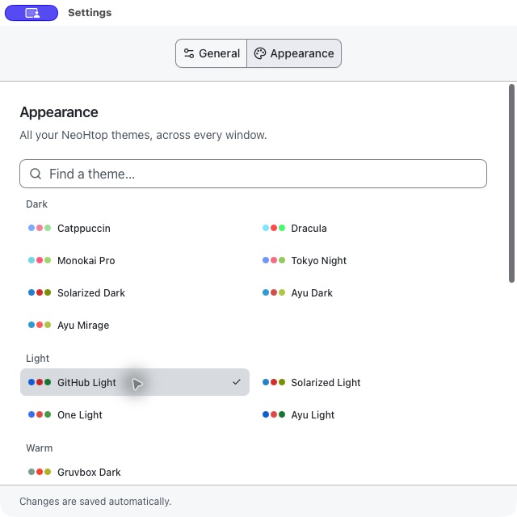

24 original themes
Still your setup.
Still your setup.
Still your atmosphere.
Catppuccin, front and center. Light, dark, colorful and retro when you want a change. The themes you love, with consistent controls and a searchable gallery.
CatppuccinDraculaTokyo NightNordGitHub LightGruvbox
